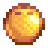
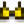

Golden Coconut
| Golden Coconut | |
 |
|
| This is one tough nut to crack, but a professional might be able to break it open. | |
| Information | |
| Source | Foraging • Island Trader • Blue Discus Fish Pond |
| Location | Ginger Island |
| Season | |
| Sell Price | Cannot be sold |
The Golden Coconut is found throughout Ginger Island and can be obtained by shaking Palm Trees (10% chance when there is a coconut visible),[1] digging Artifact Spots on Ginger Island, or from a Blue Discus Fish Pond with a population of at least 9.
It can also be purchased from the Island Trader for 10 Coconuts after previously finding and cracking at least one golden coconut.
Golden Coconuts can be cracked by Clint in the Blacksmith shop for  25g, similar to Geodes. However, unlike Geodes, they cannot be broken open using a Geode Crusher.
25g, similar to Geodes. However, unlike Geodes, they cannot be broken open using a Geode Crusher.
Contents
The first golden coconut to be cracked will always produce a Golden Walnut. Afterwards, Golden Coconuts have a chance to produce the following items.
| Image | Name |
|---|---|
| Banana Sapling | |
| Mango Sapling | |
| Pineapple Seeds (5) | |
| Taro Tuber (5) | |
| Mahogany Seed | |
| Fossilized Skull | |
| Iridium Ore (5) | |
| Golden Helmet |
Gifting
| Villager Reactions
| |
|---|---|
| Hate | |
Tailoring
The Golden Coconut is used in the spool of the Sewing Machine to create the Island Bikini. 
Tips
- The player can skip having to forage by buying 10 Coconuts from the Oasis on Mondays, then trading them with the Island Trader for 1 Golden Coconut.
References
- ↑ See TerrainFeatures.Tree::shake in the game code.
History
- 1.5: Introduced.
- 1.5.4: Fixed bug where Palm Trees in the Desert would produce Golden Coconuts.